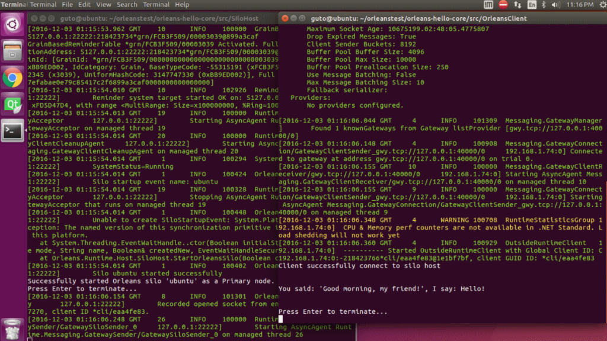

支持.NET Core的Orleans 2.0 Tech Preview
朱利安·多明格斯(Julian Dominguez)2016/12/5上午11:52:59
使Orleans与.NET Standard兼容已经是一个漫长的过程，但是我们终于有了一个最低限度的可行版本，可以开始在.NET Core中玩了！:)
Orleans2.0技术预览版1刚刚发布到MyGet：https://dotnet.myget.org/gallery/orleans-ci(要么https://dotnet.myget.org/F/orleans-ci/api/v3/index.json在NuGet中配置Feed)
与Orleans1.X的差异
Orleans2.0技术预览版不具备Orleans1.X的全部功能，因为我们移植了获得体面体验所需的最低要求，并且可以说是移植难度最大/风险最高的部分。我们希望从现在开始，其余扩展的迁移速度会更快。
此预发行版本中的一些显着差异或待处理事项：
- Orleans代码生成
- 只有在安装了.NET 4.6.2的Windows上进行构建时，构建时间代码生成器(Microsoft.Orleans.OrleansCodeGenerator.Build nuget程序包)才起作用。它还需要.NET Core Preview3工具或更高版本(如果是在VS中构建，则为VS2017 RC)。
- 但是，运行时代码生成是跨平台工作的可行替代方法(通过引用Silo宿主和客户端项目中的Microsoft.Orleans.OrleansCodeGenerator程序包)。
- 为了获得可靠的群集成员身份，存储和流，目前仅迁移了Azure存储提供程序。其余的即将推出(或随时为它们贡献一个端口)。
- .NET Standard中尚不提供BinaryFormatter(内置的.NET序列化)，它已在Orleans中用作默认的后备序列化器(通常在序列化异常时使用)。现在，我们有了一个自定义的基于IL的后备序列化器，该序列化器应快速而强大，但如果您现有的代码依赖于它，则其行为可能会有所不同[Serializable]。
- .NET标准中不支持System.Diagnostic.Trace.CorrelationManager.ActivityId。如果您依赖于此来关联Grains调用，请考虑改用Orleans.Runtime.RequestContext.ActivityId。
准备生产了吗？
没有。
大声明：我们在.NET中进行CI测试(因为我们的测试严重依赖AppDomains创建内存孤岛群集，而.NET Core不支持这些孤岛，但我们计划尽快解决)。我们已经在.NET Core(包括Windows和Linux)中完成了一些基本的手动测试，但是会遇到一些问题。获得反馈(和PR！)是此版本的主要目标之一，尚未在生产中使用。
此外，即使对于已完全移植的功能，也无法保证此技术预览版与Orleans 1.3完全向后兼容。一旦接近稳定版本，我们将列出所有已知的重大更改，以防您有兴趣将应用程序从1.3升级到2.0。因为此技术预览版不具备1.X发行版的全部功能，所以我们目前仅在MyGet中发行。
运行样本
我创建了一个在.NET Core中运行的小型Hello World示例应用程序，欢迎您使用它作为起点。
该示例位于此处：https://github.com/jdom/OrleansHelloWorldSample.Core
在Linux中运行Orleans的示例应用程序
享受它，玩弄它，并让我们知道您的想法，无论是GitHub问题，PR还是只是在我们的Gitter频道中闲逛。